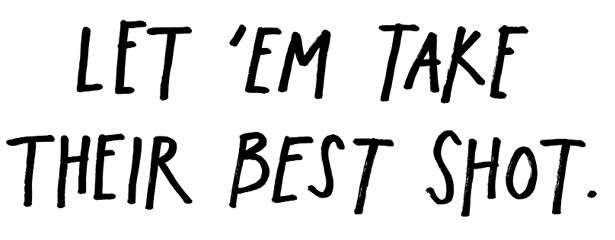
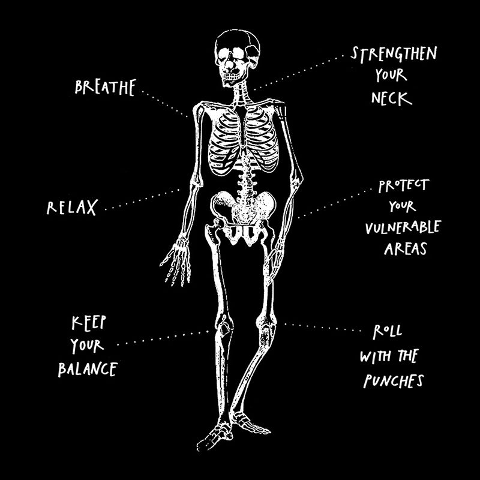
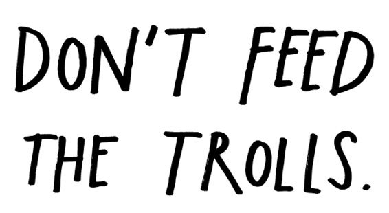
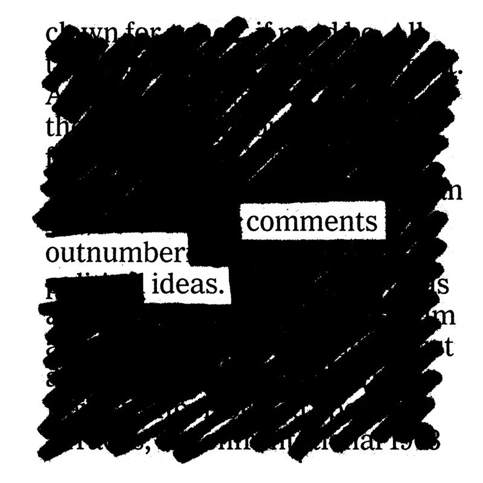

“I ain’t going to give up. Every time you think I’m one place, I’m going to show up someplace else. I come pre-hated. Take your best shot.”
—Cyndi Lauper
Designer Mike Monteiro says that the most valuable skill he picked up in art school was learning how to take a punch. He and his fellow classmates were absolutely brutal during critiques. “We were basically trying to see if we could get each other to drop out of school.” Those vicious critiques taught him not to take criticism personally.
When you put your work out into the world, you have to be ready for the good, the bad, and the ugly. The more people come across your work, the more criticism you’ll face. Here’s how to take punches:
Relax and breathe. The trouble with imaginative people is that we’re good at picturing the worst that could happen to us. Fear is often just the imagination taking a wrong turn. Bad criticism is not the end of the world. As far as I know, no one has ever died from a bad review. Take a deep breath and accept whatever comes. (Consider practicing meditation—it works for me.)

Strengthen your neck. The way to be able to take a punch is to practice getting hit a lot. Put out a lot of work. Let people take their best shot at it. Then make even more work and keep putting it out there. The more criticism you take, the more you realize it can’t hurt you.
Roll with the punches. Keep moving. Every piece of criticism is an opportunity for new work. You can’t control what sort of criticism you receive, but you can control how you react to it. Sometimes when people hate something about your work, it’s fun to push that element even further. To make something they’d hate even more. Having your work hated by certain people is a badge of honor.
Protect your vulnerable areas. If you have work that is too sensitive or too close to you to be exposed to criticism, keep it hidden. But remember what writer Colin Marshall says: “Compulsive avoidance of embarrassment is a form of suicide.” If you spend your life avoiding vulnerability, you and your work will never truly connect with other people.
Keep your balance. You have to remember that your work is something you do, not who you are. This is especially hard for artists to accept, as so much of what they do is personal. Keep close to your family, friends, and the people who love you for you, not just the work.
“The trick is not caring what EVERYBODY thinks of you and just caring about what the RIGHT people think of you.”
—Brian Michael Bendis

The first step in evaluating feedback is sizing up who it came from. You want feedback from people who care about you and what you do. Be extra wary of feedback from anybody who falls outside of that circle.
A troll is a person who isn’t interested in improving your work, only provoking you with hateful, aggressive, or upsetting talk. You will gain nothing by engaging with these people. Don’t feed them, and they’ll usually go away.
Trolls can come out of nowhere and pop up in unexpected places. Right after my son was born, this woman (presumably a follower, if not a fan) got on Twitter and sent me half a dozen tweets about how she just knew my book Steal Like an Artist was written by somebody without kids, and just you wait, mister. She then proceeded to quote passages from the book, followed by little ejaculations like, “Ha! Try that when you’re up at three a.m. with a crying baby!”
Now, I have been on the Internet a long time. I get a lot of emails from people who are, as far as I can tell, sad, awful, or completely insane. I have a pretty good mental firewall that filters what I let get to me.
This woman got to me.
Because, of course, the worst troll is the one that lives in your head. It’s the voice that tells you you’re not good enough, that you suck, and that you’ll never amount to anything. It’s the voice that told me I’d never write another good word after becoming a father. It is one thing to have the troll in your brain, it is another thing to have a stranger hold a megaphone up to it and let it shout.
Do you have a troll problem? Use the block button on social media sites. Delete nasty comments. My wife is fond of saying, “If someone took a dump in your living room, you wouldn’t let it sit there, would you?” Nasty comments are the same—they should be scooped up and thrown in the trash.
At some point, you might consider turning off comments completely. Having a form for comments is the same as inviting comments. “There’s never a space under paintings in a gallery where someone writes their opinion,” says cartoonist Natalie Dee. “When you get to the end of a book, you don’t have to see what everyone else thought of it.” Let people contact you directly or let them copy your work over to their own spaces and talk about it all they want.
